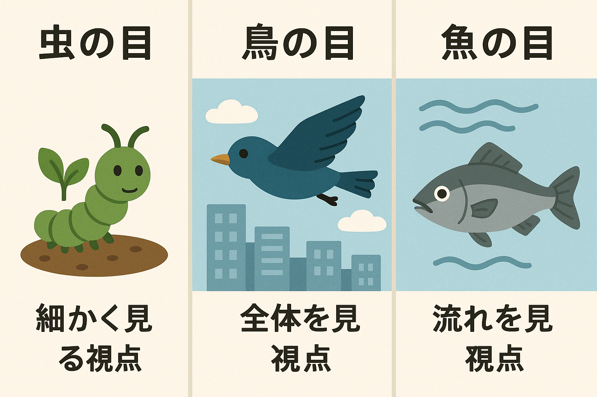

現場の微視、全社の巨視、市場の流動。
3つの視点を自在に行き来する意思決定力を身につけよ。
ビジネスで発生する複雑な課題を解決するには、1つの視点だけでは不十分です。
**「虫の目（現場データ・詳細）」**、**「鳥の目（全社戦略・構造）」**、**「魚の目（市場トレンド・時間軸）」**の3つの視点を統合し、確度の高い経営戦略とリーダーシップを発揮しましょう。

実践ビジネスケースシナリオ
全4ケース（選択して開始可能）新規AIサービスのリリース直前に致命的脆弱性が発覚。どう対応するか？
シナリオの状況説明がここに入ります。
戦略的意思決定プランの選択
あなたの分析に基づく判断を選択してください短期的売上は確保されたが、現場チームへの負荷と長期的信頼リスクが懸念されます。
4大経営評価指標 (KPI) への影響
経営インパクトバランス
現場データや直接的な課題に対する影響解説。
全社戦略・ガバナンス視点からの影響解説。
市場トレンド・競合関係の視点からの影響解説。
埋没費用（サンクコスト）効果とアジャイルガバナンス
経営理論の説明文がここに入ります。
あなたの意思決定スタイル & 経営能力診断
全シナリオを終了しました。3つの視点（虫の目・鳥の目・魚の目）の使い分け結果に基づく評価です。
現場の詳細、不具合・契約の落とし穴を見抜く細部アテンション力。
全社最適・リソース分配・損益影響を客観的に見極めるマクロ構想力。
市場潮流・技術競争・時間軸の波を捉えるトレンド洞察力。
リーダーシップ・フィードバックアドバイス
アドバイスがここに入ります。